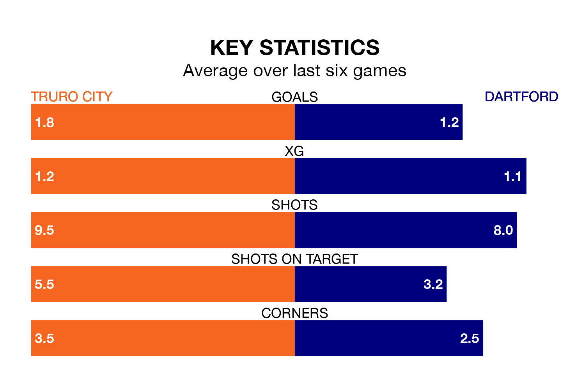

Dartford travel to Manadon Sports Hub for Tuesday's late match against Truro City looking to bounce back from defeat last time out in National League North and South.
The Darts, who sit zero in the league after 27 games, fell to a 2-1 away defeat to Maidstone United on January 9.
They face a Truro side who picked up a win in their last match, a 1-0 victory against Torquay United, and who sit zero in the table.
Truro are in fantastic form in National League North and South, with five wins and one loss from their last six games.
With two wins and a draw over that period, Dartford's form is much worse – they have taken seven points from 18, compared to City's 15.
With 40 goals in 27 games so far this season, the Darts are scoring more than average in the league with 1.5 goals per game. But they are conceding more than average too, letting in 41 goals at a rate of 1.5 per game.
The home team are also above average scorers, with 1.5 goals per game, compared to a league average of 1.4. They have conceded 1.4 goals per game.
Updated: 13:38 (UTC), 10/01/24